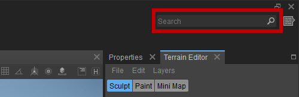
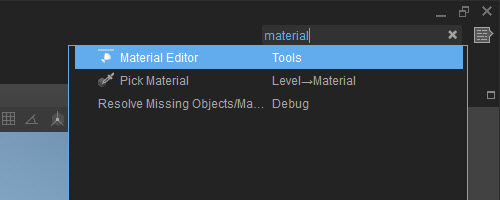
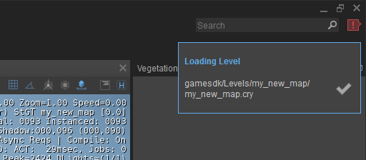
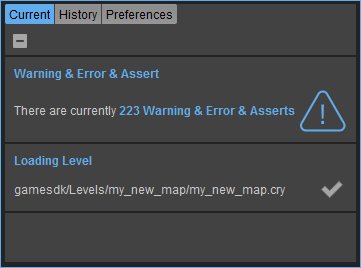
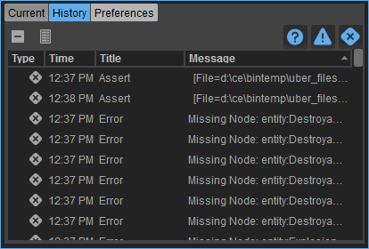
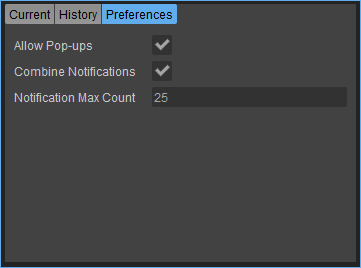
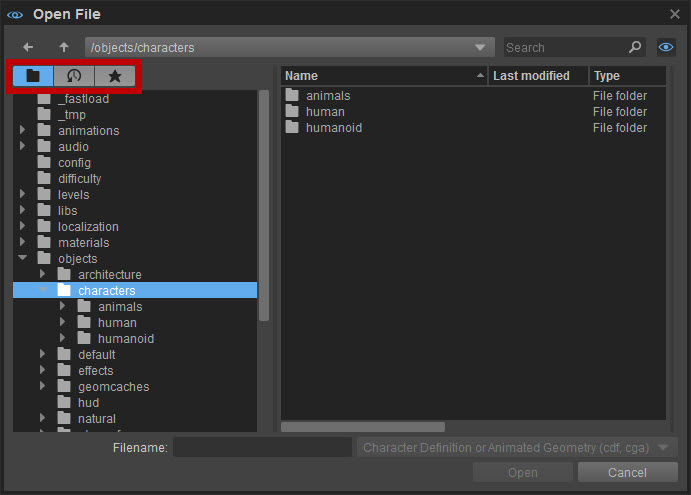
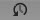

Обзор
Помимо ранее упомянутых компонентов, в правом верхнем углу UI есть еще несколько мелких, но важных компонентов; тот Главная Меню Поиск окно и Центр уведомлений. Также было изменено диалоговое окно файла.
Главное меню Окно поиска
В правом верхнем углу UI находится окно поиска по меню:

В этом окне любой инструмент или параметр в главный Строку меню можно найти и выполнить очень легко.
Например, если ввести «материал», отобразятся все параметры и инструменты в строке меню, содержащей «материал:

В правом столбце будет показано, где в строке меню расположен каждый инструмент или параметр.
Затем вы можете либо щелкнуть инструмент или параметр, который вы ищете, чтобы его выполнить, либо перемещаться по списку с помощью значка Вверх и Вниз стрелка кнопки и нажмите Войти.
Центр уведомлений
Центр уведомлений представляет собой комбинацию всплывающих сообщений, которые не являются модальными и не требуют ввода данных пользователем, а также местом, где можно увидеть список задач, ошибок и предупреждений. В этих сообщениях отображаются уведомления, предупреждения, ошибки и фоновые задачи.

В этом углу по умолчанию будут появляться всплывающие сообщения. Эти сообщения:
- будет содержать значок с подробным описанием критического уровня (информация, предупреждение, подтверждение и ошибка).
- можно нажать, чтобы немедленно скрыть их и перейти туда, где произошла ошибка.
- по умолчанию будут объединены в одно всплывающее окно (если это уведомления, поступающие от предупреждений, утверждений и ошибок)
- можно полностью отключить на панели настроек, описанной ниже.
Shift+щелчок левой кнопкой мыши скроет все текущие всплывающие окна.
При нажатии на кнопку рядом с окном поиска по меню появляется окно Центра уведомлений. В этом окне есть три вкладки: Текущий, История и Предпочтения.
Центр уведомлений также можно открыть, перейдя в Инструменты -> Дополнительно -> Центр уведомлений..
Текущий
На вкладке «Текущие» отображается коллекция всех уведомлений.

- Уведомления, поступающие от предупреждений, утверждений и ошибок, по умолчанию будут объединены в одно уведомление после отображения более 25 уведомлений. Эту опцию можно отключить, а число можно настроить на панели настроек, описанной ниже.
- Нажатие на уведомление на этой панели скроет его и, если возможно, перенесет пользователя туда, где возникла ошибка.
- Щелчок правой кнопкой мыши по уведомлению вызовет контекстное меню с возможностью скопировать содержимое сообщения в уведомлении.
- Все уведомления можно скрыть, нажав кнопку Очистить все (
) кнопка в левом верхнем углу
История
История уведомлений содержит полную историю сообщений. Двойной щелчок по элементу, если это возможно, приведет пользователя к источнику ошибки.

| Кнопка | Описание |
|---|---|
| Очищает список сообщений. | |
 | Показывает полную историю сообщений. |
| Показывает/скрывает информационные сообщения. | |
| Показывает/скрывает предупреждения. | |
| Показывает/скрывает ошибки. |
Щелкнув по заголовкам столбцов (Тип, Время, Название, Сообщение) отсортирует элементы в списке.
Предпочтения

| Вариант | Описание |
|---|---|
| Разрешить всплывающие окна | Включите/отключите всплывающие уведомления о предупреждениях, утверждениях и ошибках. Они по-прежнему будут храниться как в списке уведомлений, так и в истории. |
| Объединить уведомления | Включить/отключить объединение предупреждений, утверждений и ошибок в одно уведомление, когда в списке уведомлений отображается максимальное количество уведомлений. |
| Максимальное количество уведомлений | Максимальное количество уведомлений, отображаемых до того, как они будут объединены в одно уведомление в списке уведомлений. |
Диалоговое окно файла
В обновлении 5.2 в диалоговые окна файлов добавлены кнопки:

Выделенные кнопки являются новыми. Слева направо они таковы:
| Кнопка | Имя | Описание |
|---|---|---|
| Каталоги | Показывает стандартное древовидное представление каталогов. | |
 | История | Список папок для последних выбранных файлов. Это сохранит последние 30 записей. |
| Избранное | Список ваших любимых папок и файлов. Нажмите эту кнопку, и вы сможете просто перетащить папки и файлы справа в окно «Избранное» слева. Щелкните правой кнопкой мыши на них и выбирай Удалить из избранного удалить. |